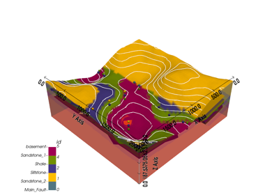
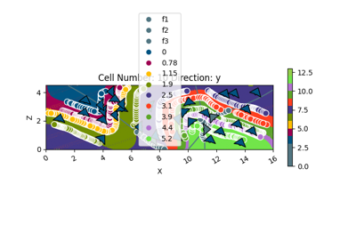

gempy.core.data.OrientationsTable¶
- class gempy.core.data.OrientationsTable(data: ndarray, name_id_map: dict[str, int] | None = None, _model_transform: Transform | None = None)[source]¶
A dataclass to represent a table of orientations in a geological model.
Examples using
gempy.core.data.OrientationsTable¶1.1 -Basics of geological modeling with GemPy
1.1 -Basics of geological modeling with GemPyHechoMethods
__init__(data[, name_id_map, _model_transform])empty_orientation(id)fill_missing_orientations_groups(...)from_arrays(x, y, z, G_x, G_y, G_z, names[, ...])get_orientations_by_id(id)get_orientations_by_id_groups()get_orientations_by_name(name)initialize_empty()Attributes
dfThe custom data type for the data array.
gradsididsmodel_transformA mapping between orientation names and ids.
nuggetxyzA structured NumPy array holding the X, Y, Z coordinates, gradients G_x, G_y, G_z, id, and nugget of each orientation.
- data: ndarray¶
A structured NumPy array holding the X, Y, Z coordinates, gradients G_x, G_y, G_z, id, and nugget of each orientation.
- name_id_map: dict[str, int] | None = None¶
A mapping between orientation names and ids.
- dt = dtype([('X', '<f8'), ('Y', '<f8'), ('Z', '<f8'), ('G_x', '<f8'), ('G_y', '<f8'), ('G_z', '<f8'), ('id', '<i4'), ('nugget', '<f8')])¶
The custom data type for the data array.
- __init__(data: ndarray, name_id_map: dict[str, int] | None = None, _model_transform: Transform | None = None) None¶